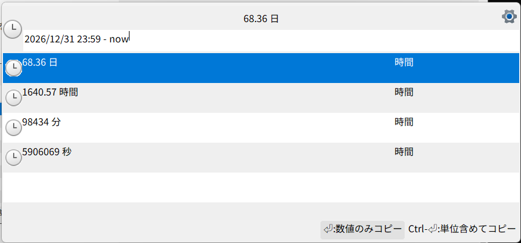
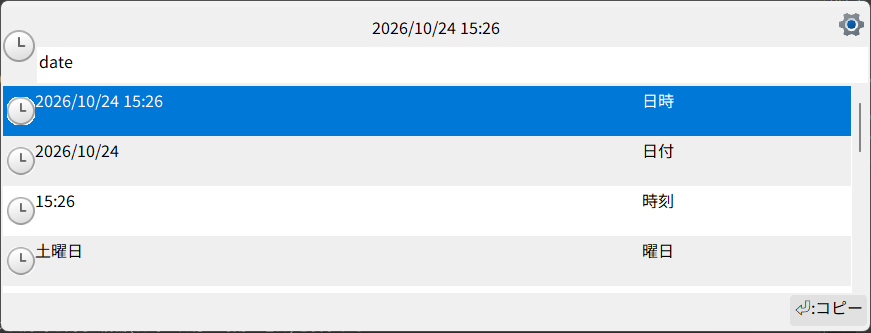

簡易時間計算
時間差
HH:MM-HH:MMの形式で入力すると、時間間隔を表示する。
コマンドを実行すると時間をクリップボードにコピーする。
例: 13:43-12:50 → 53分
年月日を含む日時同士の差も計算できる。左右の日時は-で区切る。
YYYY-MM-DD hh:mmまたはYYYY/MM/DD hh:mmで年月日と時刻を指定するMM/DD hh:mmは実行年の日付として扱う。指定日が過去でも翌年には繰り越さないhh:mmは実行日当日の時刻として扱うnowまたは「拡張機能」で設定した日時プレフィックスは、実行時の現在日時として扱う平年に指定した
2/29は3/1として扱う
例:
2026/10/30 15:00 - nownow - 2026/09/01 12:002026-10-30 15:00 - 10/10 14:17
時間・分・秒の候補を表示する。差の絶対値が24時間を超える場合は、日数を小数2桁で表示する候補も追加する。たとえば25時間は1.04 日となる。

日時
「拡張機能」の時刻と日付が有効な場合に利用できる。
設定したプレフィックス(既定値:
date)のみを入力すると、以下を候補として表示する日時:
2026/10/10 14:17日付:
2026/10/10時刻:
14:17曜日:
土曜日
N day(s) later/N day(s) ago、N日後/N日前を入力すると、現在時刻を起点にN日後/前の日付を基準として、プレフィックス入力時と同じ4候補(日時・日付・時刻・曜日)を表示する
プレフィックスは不要。例:3 days later、1日前。日数の上限は36500日(約100年)時刻は現在の時刻のまま。日付・曜日のみが
N日分ずれる
候補を実行すると、表示した文字列をクリップボードにコピーする
プレフィックスは「拡張機能」の設定で変更できる。時間差の入力では、設定したプレフィックスと
nowのどちらも現在日時の別名として使える。同じプレフィックスを他のコマンドと設定した場合は、両方の候補が表示される
